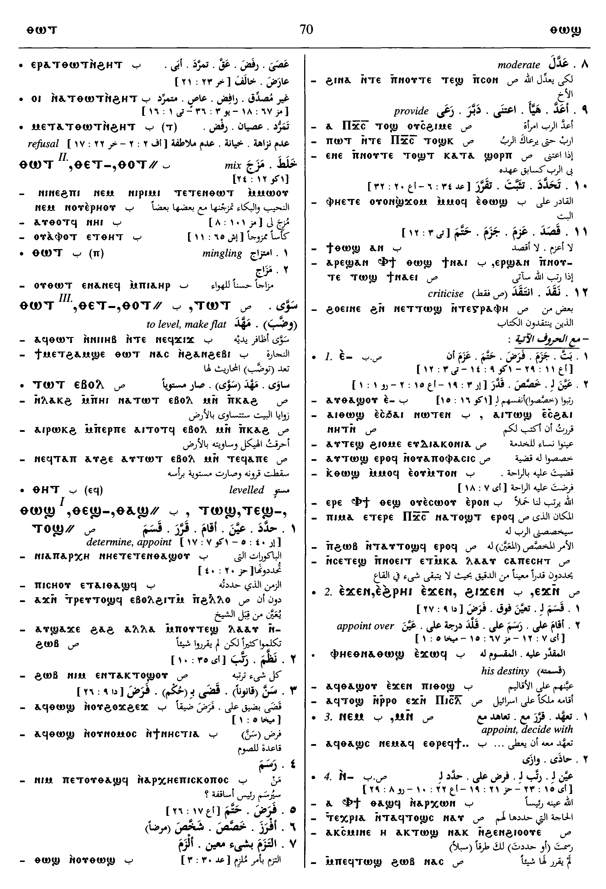
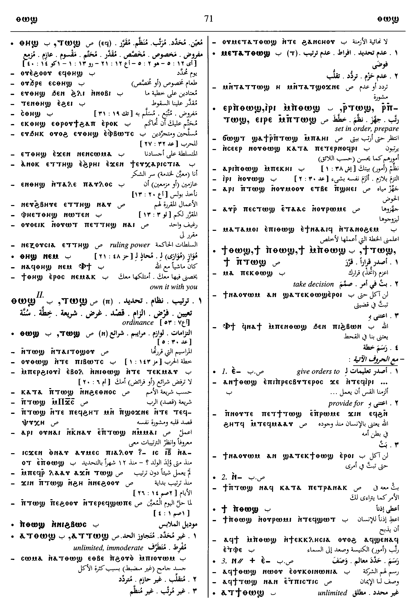
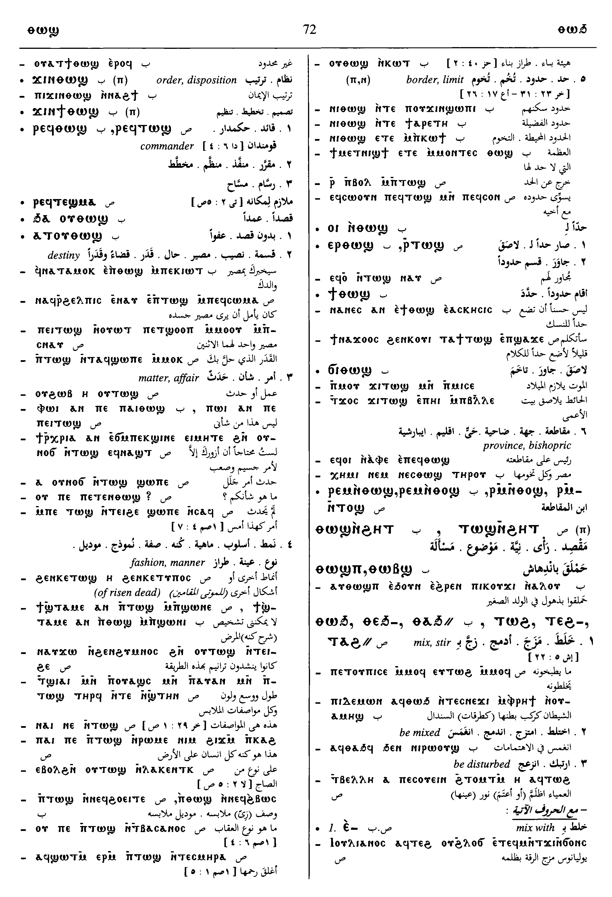
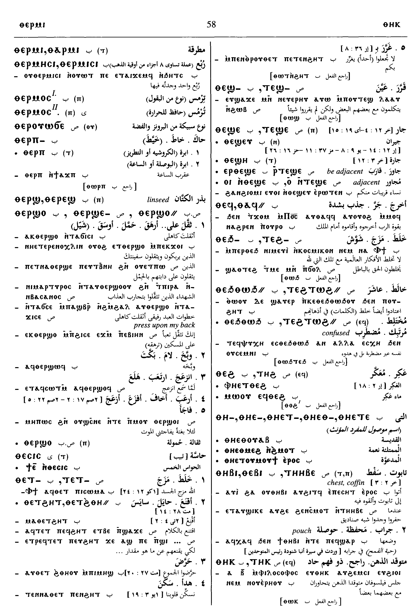
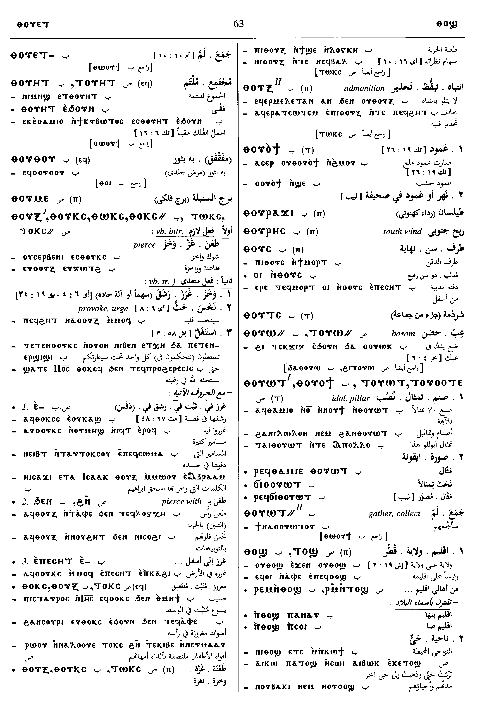
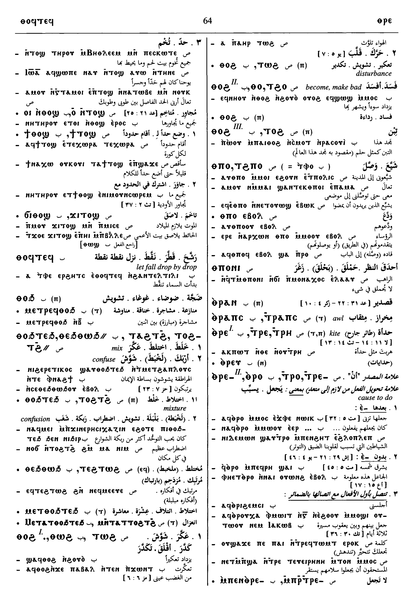

(verb)
intr: be boundary, be fixed, be moderate [οριζειν, τασσειν]
tr: limit, determine, appoint [οριζειν]
tr: limit, determine, appoint [οριζειν]
1: be boundary, 2: be fixed, 3: be moderate, 4: limit, 5: determine, appoint
complete+
| With following preposition:4906 | Crum: 450a | ||||||||
| ― ⲉ- SALBF | (verb)decide for, ordain to
― intr: ― qual: destined to, about to ― tr: appoint, destine to4907 |
||||||||
| ― ⲉϫⲛ- SABF | be appointed over, for
― intr: ― qual: ― tr: ordain for, set over4908 |
Crum: 450b | |||||||
| ― ⲙⲛ-, ― ⲛⲉⲙ- SBF | appoint, decide with4909 | ||||||||
| ― ⲛ- (dat) SABF | [οριζειν, τασσειν]4910 | ||||||||
| ― ⲛⲧⲛ- S | 4911 | Crum: 451a | |||||||
| ― ϩⲓϫⲛ- | 4912 | ||||||||
| ― SABF
plural: ⲧⲱⲱϣ A |
(noun male)ordinance, destiny, affair, fashion [ορος, ορισμος, διαταξις, διαταγη]
destiny, condition matter, thing fashion, manner2420 |
||||||||
| ⲁⲧⲧ. SB | unlimited, immoderate2421 | Crum: 451b | |||||||
| ⲙⲛⲧⲁⲧ., ⲙⲉⲧⲁⲧ. | infinity
indecision2422 |
||||||||
| ⲉⲓⲣⲉ ⲧ., ⲣ ⲧ. SB | set in order, prepare2423 | ||||||||
| ϯ ⲧ., ϯ ⲛⲧ. SBF | give orders, take decision, provide2424 | ||||||||
| ⲣⲉϥⲧ., ⲣⲉϥⲑ. SB | commander
draughtsman2425 |
||||||||
| ϫⲓⲛⲑ. B | order, disposition [διαταξις]2426 | ||||||||
| ⲧⲟϣ SO
ⲧⲱϣ S ⲧⲁϣ SfAF ⲑⲟϣ, ⲑⲱϣ B ⲧⲉϣ- S |
(noun male)border, limit [οριον, νομος]
nome province, district, suburb bishopric2427 |
||||||||
| ⲣⲙⲛⲧ. S | man of the nome, dweller in same n.2428 | Crum: 452b | |||||||
| ⲣ ⲧ., ⲉⲣ ⲑ. | be limit, adjacent2429 | ||||||||
| ϯ ⲧ., ϯ ⲑ. | adjoin, set bounds2430 | ||||||||
| ⲁⲧϯ. NH [codex II - The Apocryphon of John; 106; 3; 7; ⲉϥϫⲏⲕ ⲧⲏⲣϥ ϩⲛ ⲟⲩⲟⲉⲓⲛ ⲟⲩⲁⲧϯ ⲧⲟϣϥ ⲡⲉ]
[codex III - The Apocryphon of John; 113; 5; 9; ⲛⲟⲩⲁⲧϯⲧⲱϣ ⲉⲣⲟϥ ⲡⲉ] [codex IV - The Apocryphon of John; 118; 4; 14; ⲉϥϫⲏⲕ ⲧⲏⲣϥ ϩⲛ ⲟⲩⲟⲉⲓⲛ ⲟⲩⲁⲧϯ ⲧⲟϣϥ ⲡⲉ] |
unboundable, illimitable8768 | ||||||||
| ϫⲓ ⲧ., ϭⲓ ⲑ. | adjoin2431 | Crum: 452b | |||||||
| ⲧⲉϣⲉ S
ⲑⲉϣⲉ, ⲑⲉϣⲏ (once) B plural: ⲧⲉϣⲉⲉⲩ S plural: ⲑⲉϣⲉⲩ B |
(noun male/female)borderer, neighbour, that which adjoins [γειτων]2432 | ||||||||
See also:
| view | ⲥⲙⲓⲛⲉ SA ⲥⲙⲏⲛⲉ L ⲥⲉⲙⲛⲓ BF ⲥⲙⲓⲛⲓ F ⲥⲙⲛ- SA ⲥⲙⲉⲛ- SF ⲥⲙⲓⲛ-, ⲥⲙⲛⲧ- S ⲥⲙⲙⲛ- L ⲥⲉⲙⲛⲉ- B ⲥⲙⲛⲧ⸗ SAF ⲥⲉⲙⲛⲏⲧ⸗ BF ⲥⲙⲟⲛⲧ† SB ⲥⲙⲟⲧ† B ⲥⲙⲁⲛⲧ† ALF ⲥⲙⲁⲁⲛⲧ† L ⲥⲉⲙⲛⲏⲟⲩⲧ† B | (verb) intr: be established, set right, in order [ισταναι, τιθεσθαι, ορθουσθαι]
qual: [μενειν] tr: ― establish, construct, set right [στηριζειν] ― compose, write book ― provide, pay for book ― set up, construct building913 |
| view | ϭⲓⲏ, ϣⲓⲏ B | (noun male) border, limit [οριον]2511 |
| view | ⲁⲣⲏϫ⸗, ⲁⲣⲏⲏϫ⸗ SA ⲁⲩⲣⲏϫ⸗ B ⲁⲗⲟϫ⸗ S | (noun) limit, end [περαν, εσχατον]498 |
Dawoud: 70a - 71a, 71a - 72b, 58b, 58b, 56a, 59b, 63b - 64a







